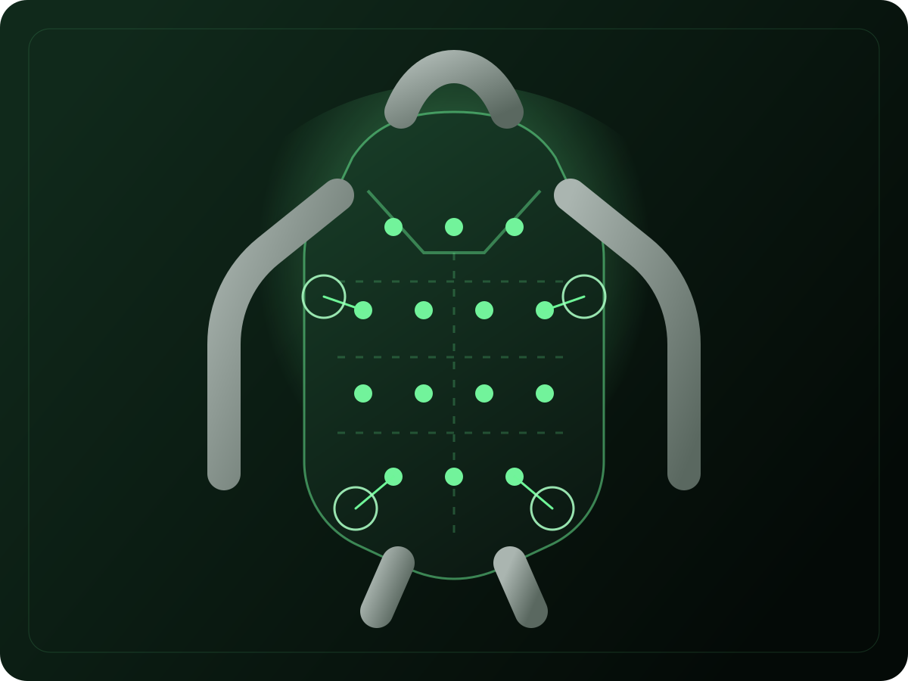
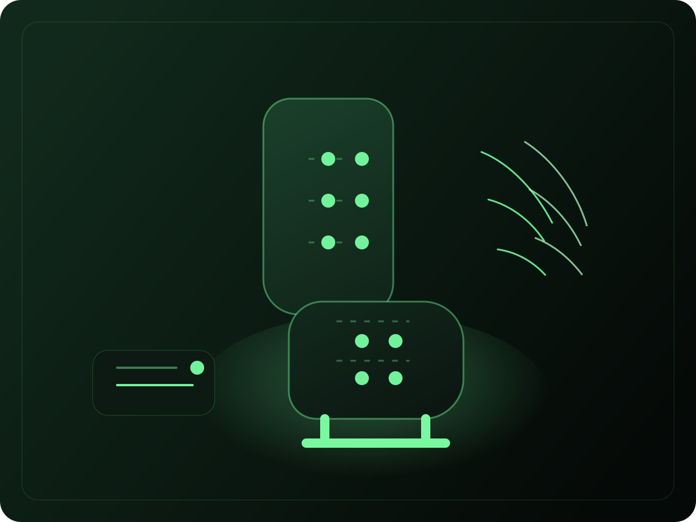
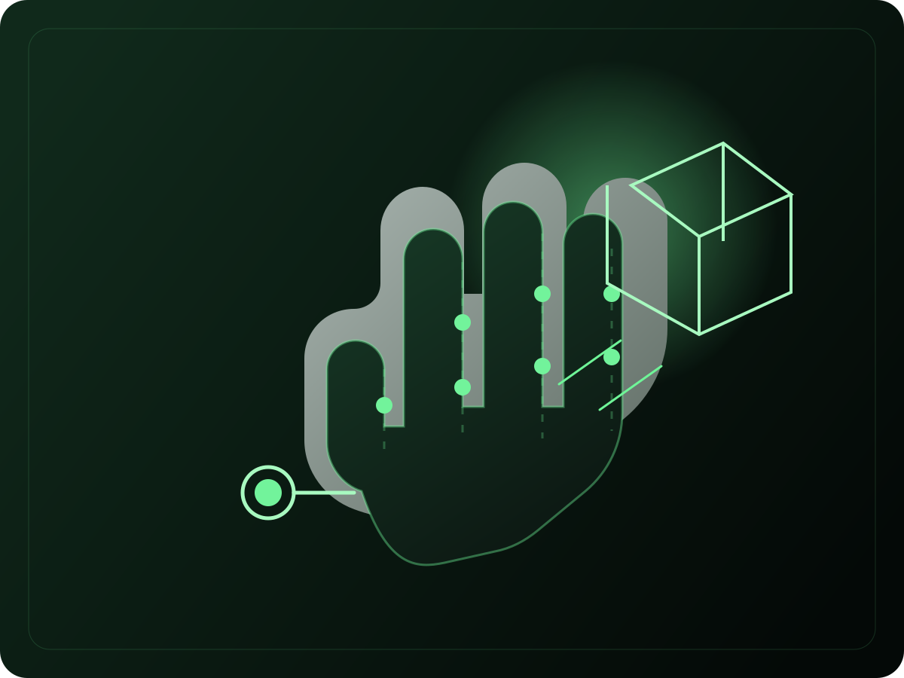
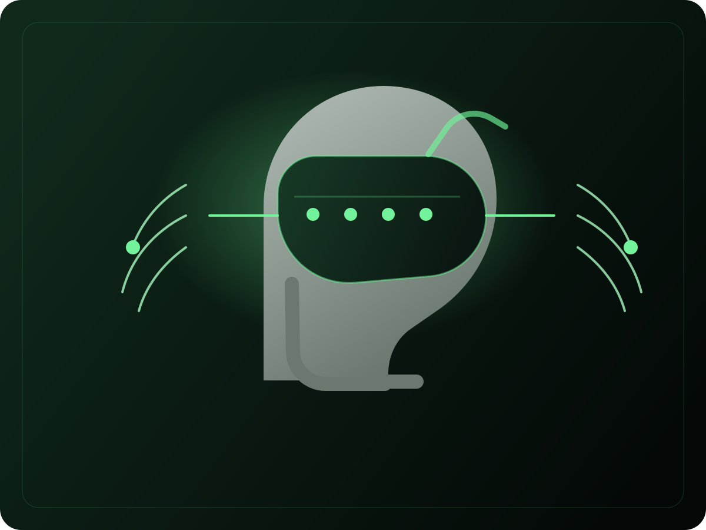

Immersive media
Turn games, movies, XR, and live entertainment into synchronized tactile layers that match motion, emotion, and context.
Media-to-Haptics Translation Layer
ViiVAI Labs processes content and context to automatically generate spatial haptic patterns across multimodal media. We enable Digital Touch for immersion, efficiency, and wellness.
What We Build
Our workflows use multimodal machine learning to extract features from media, and generative AI to synthesize semantically coherent haptic experiences for games, films, sports, prompts, tasks, and wellness routines.
Turn games, movies, XR, and live entertainment into synchronized tactile layers that match motion, emotion, and context.
Guide attention, improve task execution, support navigation, and communicate priority without adding visual or audio overload.
Embed intuitive cues in seats, furniture, wearables, and smart environments for safer, calmer, and more natural interactions.
Support core hardware and software technology development with research, prototyping, integration, and deployment guidance.
Product Applications
ViiVAI adapts its translation engine across body locations, use cases, and actuator technologies while preserving coherent spatial feedback.

Vests, jackets, and harnesses that deliver spatial awareness for workplace safety and battleground awareness, plus rich feedback for games and healthcare.

Car seats, theater seating, office chairs, and lounge furniture that sense posture and behavior, then guide action through intuitive tactile cues.

Half gloves and palm rings that track hand motion and render virtual object sensation on the palm and fingers for dexterous skilled tasks.

VR headsets and smart glasses that render left-right spatial awareness cues for navigation, alerts, and contextual digital assistance.
Why Now
Most digital experiences still force information through eyes and ears alone. ViiVAI expands communication into touch so interfaces can become more immersive, more efficient, and more humane.
“Making touch an integrated, synchronized layer of digital communication.”